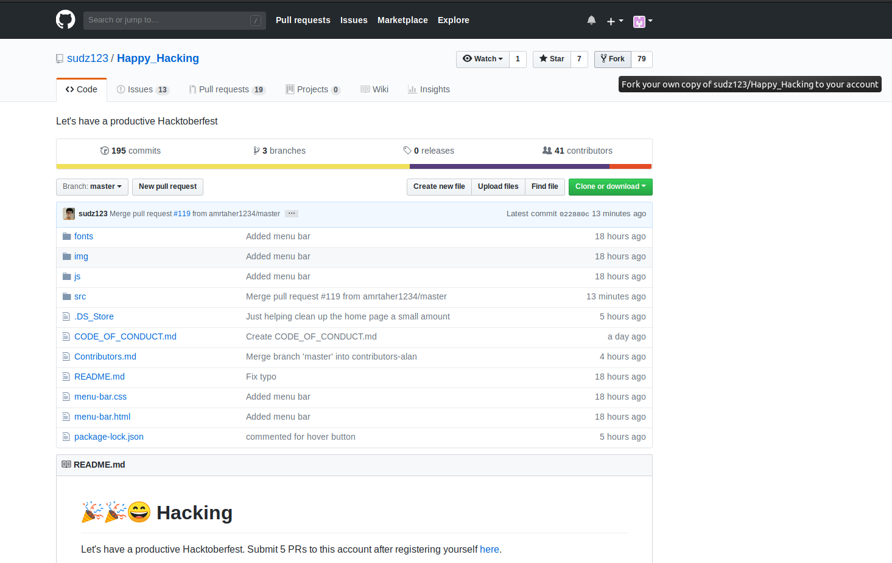
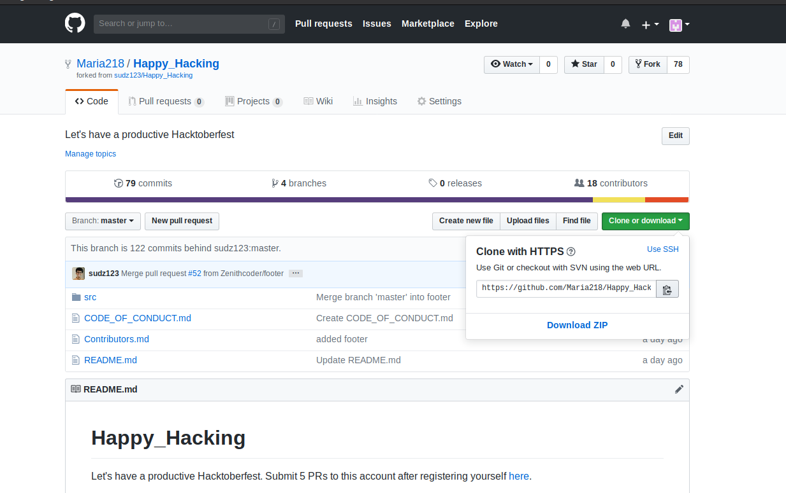

Welcome to the Happy Hacking page!!! My name is Sudarshan Kamath and for this Hacktoberfest, I decided to host a repository allowing every Github user to make their 5 pull requests, and in the process create a website about Open Source Programming and its importance.
This page is very easy to contribute to. Go ahead and look at our issues page and see what you can fix or make better. Or if you see an issue that isn't listed, create an issue and work on it and you would have contributed to this website. This repository is also good for first timers who have never contributed to a project before.
Beginners might think it's difficult to contribute to an open source project but its pretty easy, actually. All you need is basic github knowledge. Just follow these steps below and you can be a contributer to this Open Source Project!
Begin by forking this repository
Then proceed to clone the forked repository
After cloning, enter into the cloned project in your terminal by running the command cd Happy_Hacking
When you are in that directory, create a new branch by running the command git checkout -b nameOfYourBranch
Then just make your changes in whatever file or folder you wish and commit and push your work
After pushing, go to your forked repository and click "New pull request"
Compare the changes between the master branch at the base and your branch as the compare and add your pull request and voila! You have contributed to your first project!